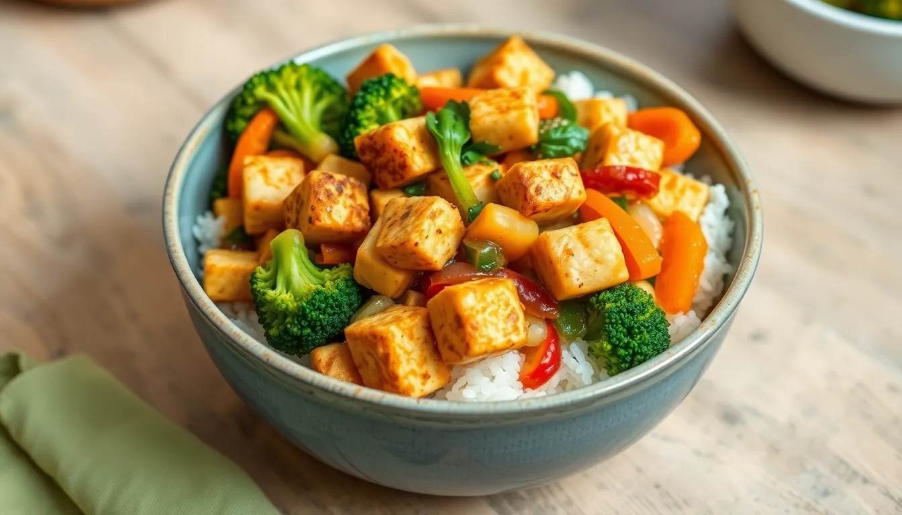

Tofu Stir-Fry
Prep time: 15 minutes - Cook time: 15 minutes - Total time: 30 minutes
Estimated total cost: $15.20 - Estimated cost per serving: $3.80 - Serves: 4

Ingredients
- 1 block firm tofu, pressed and cubed - $2.50
- 2 cups cooked rice - $0.80
- 1 broccoli crown, chopped - $1.50
- 1 bell pepper, sliced - $1.50
- 1 carrot, sliced thin - $0.30
- 1 small onion, sliced - $0.80
- 2 tablespoons soy sauce - $0.30
- 1 tablespoon oil - $0.20
- 2 cloves garlic, minced - $0.20
- 1 teaspoon ginger - $0.15
- 1 tablespoon cornstarch, optional - $0.05
- 1 tablespoon maple syrup or brown sugar - $0.20
- 2 tablespoons water - $0.00
Estimated ingredient total: $8.50 to $9.00
Displayed website estimate: $15.20
Detailed Instructions
- Press the tofu for 10 to 15 minutes to remove excess moisture, then cut it into cubes.
- If you want crispier tofu, toss the cubes with cornstarch.
- Heat half the oil in a large skillet over medium-high heat.
- Add the tofu and cook for 6 to 8 minutes, turning occasionally, until lightly browned on several sides.
- Remove the tofu from the skillet and set aside.
- Add the remaining oil to the pan along with the onion, broccoli, bell pepper, and carrot.
- Cook the vegetables for 5 to 6 minutes, stirring often, until just tender.
- Add the garlic and ginger and cook for 30 seconds.
- Stir in the soy sauce, maple syrup, and water.
- Return the tofu to the pan and toss to coat everything in the sauce.
- Cook for 1 to 2 more minutes until hot.
- Serve over warm rice.
Helpful Notes
- Frozen stir-fry vegetables can lower prep time.
- Add more soy sauce or chili flakes if you want stronger flavor.
- Leftovers keep well for lunch the next day.
Price note: Ingredient prices can vary by store, brand, and region, so these are planning estimates rather than exact totals.